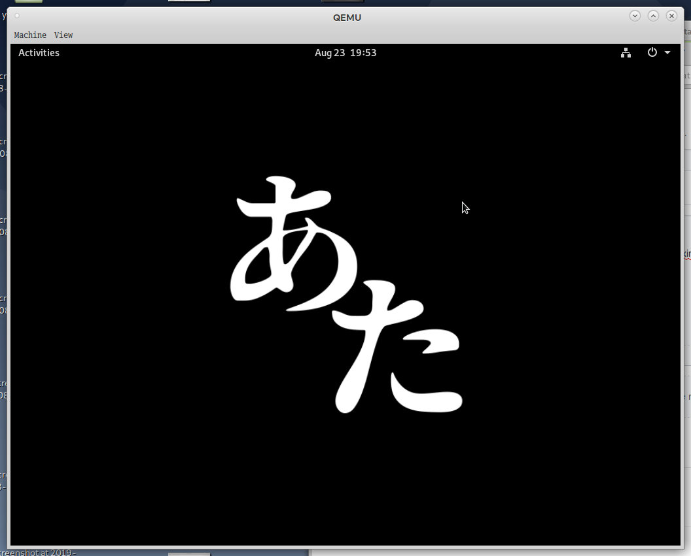

Ataraxia Linux is an independent multi-platform general purpose operating system, based on Linux kernel, musl libc and busybox. Ataraxia Linux is aimed to be simple, compact and safe, because was founded on the KISS and could be used on desktop, servers and embedded devices. Ataraxia Linux is available for x86, ARM, MIPS, PowerPC64 (big and little endians) and RISC-V. It uses it's own package manager called "ne" which is used to be friendly wrapper for "dpkg" and compatible with CRUX Pkgfiles. Ataraxia Linux is oriented towards advanced Linux users, who know what they're doing.
If you want to get help or advice, please, check out our IRC, Telegram, Matrix, Reddit and Discord.
Also, you can help us with finances. Check out our Patreon page.
We've released snapshot for x86_64 for now. This is interim release made to show GNOME Desktop Environment working without systemd, elogind, pulseaudio, avahi and Linux-PAM. Download and changelog
We glad to announce that GNOME and Xfce are officialy supported by Ataraxia Linux Team! GNOME can run without systemd, pulseaudio (we're using apulse), avahi and PAM(but we're using PAM to trick gdm's configure but not installing it in system as well).
We've released snapshot for x86_64 for now. This is interim release made to show what we've done in 3 months. Download and changelog
We've released snapshot for PowerPC64 (Big-Endian and Little-Endian). This is interim release made to show what we've done in 2 months. Download and changelog
We glad to announce that we moved to OpenRC! We had issues with runit and initscripts. Also we added netifrc from Gentoo Linux.
We have changed name to Ataraxia Linux.
We pleased to announce that a new release has arrived! Changelog and downloads: https://github.com/ataraxialinux/ataraxia/releases/tag/tp1
We pleased to announce that we opened a Discord Server!
We pleased to announce that we have our brand new package manager called "ne"! Click here for more information.